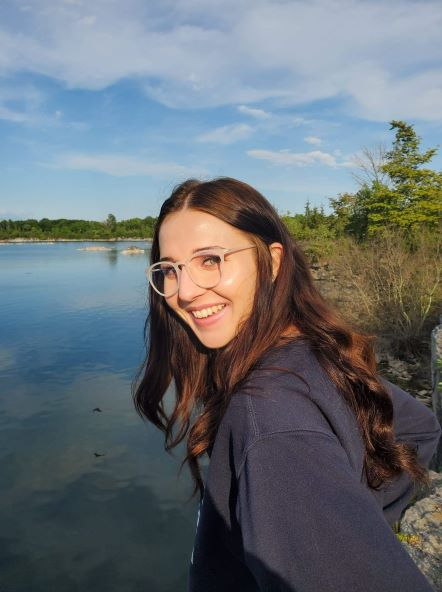
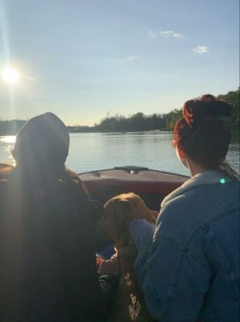

Hello! My names Kerstyne, I'm 25 years old and I live in the Niagara Region. I was born and raised in Welland, ON, but hope to live out on Vancouver Island in the near(ish) future. My hobbies vary and I'm known to obsess over one until I've done it too much before switching to the next; I'll always end up rotating back through them all at some point. Some days you won't be able to drag my nose out of a book, other days i'll be embracing what i like to call 'my 90 year old self' while I cross-stitch or knit the day aaway. My current go-to is video games, which likely has to do with the new gaming computer I bought 'for school'. If you step foot into my apartment you'll be welcomed by my jungle of plants I've collected over the past 2 years; the newest of which I bought recently, a Bird of Paradise. And when my schedule aligns with my friends, we like to go out on the lake, hike or just cause general shenanigans. If I ever need to recharge or just get away, somewhere up North, on a like, sitting around a bonfire is where you'll find me. There's nothing quite like being completely surrounded by nature to remind you of whats really important in life. I've had 2 knee surgeries in the past 6 years (on the same knee), I'm only kind of allergic to peanuts, I'm in my 7th year of post-secondary education (even though I swore after my undergrad I wasn't going back), and I will always greet dogs and cats before I greet their people.